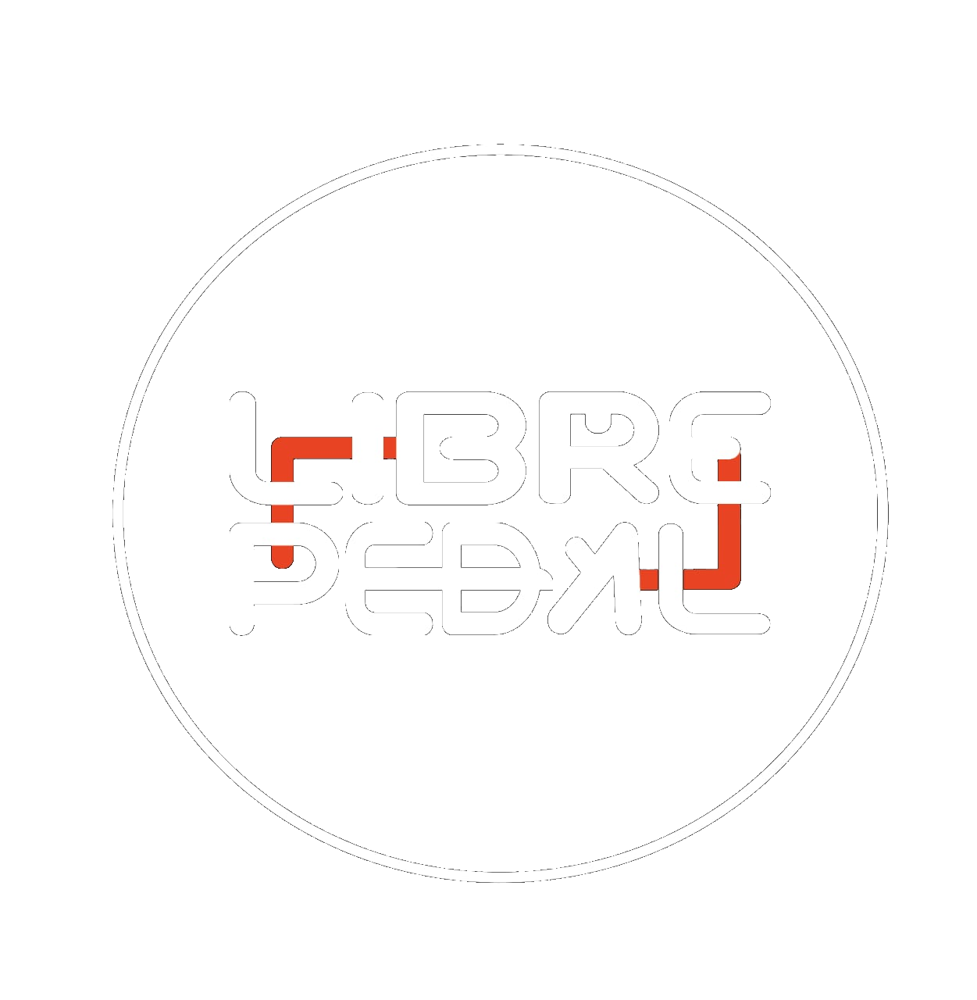

Libre Pedal te guía por voz como Waze, graba tu ruta sola, y te conecta con una comunidad real de ciclistas. Las decisiones importantes —como en qué se invierte cuando crezcamos— las vota la comunidad, no nosotros.
Sin tarjeta, sin letra chica. Funciona en el navegador y como app.

Esto no es una maqueta: son los datos reales de la app, ahora mismo.
Lo que prometemos mientras la comunidad crece:
Cada voto y comentario lo puso una persona real pedaleando. Si el mapa se ve vacío en tu zona, es porque nadie ha pasado aún — no lo disfrazamos.
En el mapa comunitario tu posición se comparte aproximada, nunca exacta. Modo fantasma disponible cuando quieras.
Hoy puedes probar navegación, mapa, comunidad, seguridad y estadísticas sin costo. El modelo definitivo todavía lo estamos definiendo, y cualquier cambio se avisa antes de aplicarse.
Sembramos el mapa con miles de puntos reales de OpenStreetMap, el mapa colaborativo libre — no inventados.
Siete mundos, un solo lugar. Esto es lo que ya funciona hoy, no una lista de promesas.
Los puntos del mapa vienen de OpenStreetMap y de ciclistas que ya usan la app — no son cifras de marketing.
Crea tu personaje, elige tu casco y sal a rodar. La comunidad se construye entre todos, incluido tú.